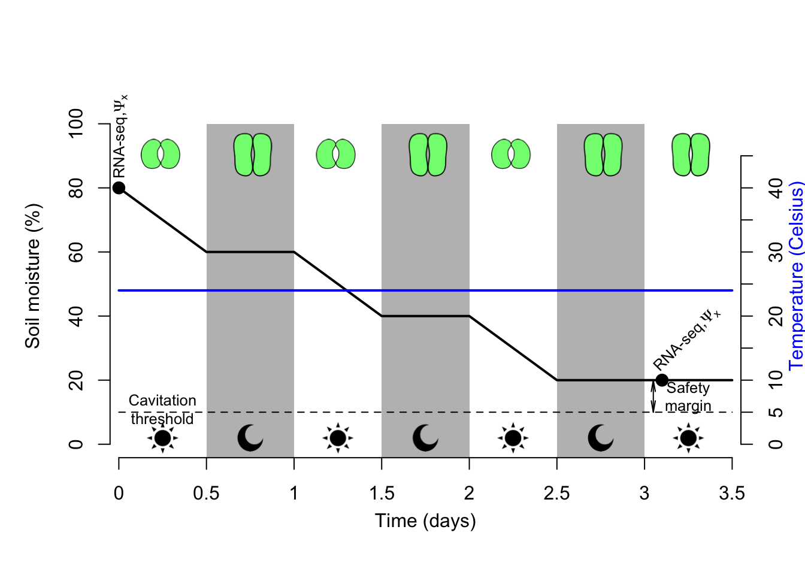

To annotate the sagebrush genome (and identify adaptive loci related to drought and heat stress) a suite of GxE experiments are conducted followed by RNA sequencing and transcriptome assemblies (later referred to as bioinformatic analyses). This document is dedicated to describing our experimental design, which is associated to comparing drought and heat performance between sagebrush individual lines and identifying adaptive loci associated to these phenotypes. Leaf and root tissues will be sequenced using RNA-seq technology (on Illumina NovaSeq platform).
Our project aims at assessing genome to phenome mechanisms involved in drought (D), heat (H) and combined drought + heat (DH) tolerance in two sagebrush individual lines originating from contrasting climates (and corresponding to different genotypes). In addition, this approach will allow quantifying and comparing genotype responses to acute abiotic stress therefore supporting forecasting efforts to evaluate the adaptive potential of sagebrush populations to climate change. To reach these goals, we are applying a 3-tier approach:
Descriptions of the three stages of this approach is provided below.
GxE experiments were conducted on G1_b2 (from ID representing drought tolerant genotype, but undergoing low summer heat stress) and G2_b24 (from UT representing drought sensitive genotype, but undergoing high summer heat stress) individual lines. 30 plantlets were generated per individual line per treatment (n=30) with 5 plantlets for associated control treatments (n=5). Please see Figure 3.1 for more details (see below for more details). Plantlets were grown in PhytoCon 946 ml vessels with XX gr of soil (4 sand: 1 vermiculite ratio) and acclimatized to condtions in the P4 Percival culture chamber. One week prior to imposing treatment a sealed plastic lid covering the soil was applied to prevent evaporation and only support water movement via transpiration. This setting was key to infer timing of stomatal closure as a response to applied treatments (see below for more details).
Soil moisture, water potential (\(\Psi~soil~\)) and air relative humidity were monitored during treatments to assess plantlets transpiration rates and evaluate stomatal closure using XXX devices. In the case of D and DH treatments, plantlets were harvested when stomata were fully closed 9meaning that they are entering into starvation to avoid death by cavitation; see below for more details). Leaf sizes were inadequate to measure stomatal conductance and we therefore had to apply a different approach to measure this process. This was estimated by comparing night vs. day soil moisture data using a t-test (here we were after H0 = no significant difference between the two datasets). Upon stomatal closure, transpiration would stop therefore soil moisture should remain identical between night and day. This assumption is only correct when evaporation is null and that variation in soil moisture is only driven by transpiration.
Estimating this process will be facilitated by the lid preventing evaporation (see above). To further estimate cavitation upon stomatal closure stem xylem pressure (\(\Psi~x~\)) was measured when plantlets were harvested using the XXX device. This trait corresponds to the plant’s ability to undergo high xylem pressure caused by drought resulting in air bubbles entering the xylem and disrupting the water flow therefore causing cavitation. To avoid death by cavitation, plants evolved mechanisms to close their stomata, which are mostly regulated by ABA. The ability of a plant to sustain high xylem pressure and therefore minimize cavitation can be predicted by its vessels’ pore diameters. In this context, stem and root xylem anatomies of our individual lines were quantified and compared using SEM and light microscopy. Finally, transpiration rates have been shown to be associated to stomata density. Stomata density on both side of the blade were quantified and compared between individual lines using SEM.
GxE experiments: Drought (D), Heat (H) and drought x heat (DH) treatments were conducted on 30 plantlets per individual line per treatment. Treatments were conducted in the P4 Percival culture chamber and all plantlets were distributed on one shelf to avoid any light or temperature effects. To further investigate any culture chamber effect, plantlets were equally subdivided into three groups (each including 10 plantlets) depending on their position on the shelf: right side, middle and left side. Estimation of transpiration rates for each group were inferred by randomly selecting two plantlets per group and tracking changes of water content through time using a METER EC-5 probe. Five control (C) plantlets associated to each treatment were harvested at 0 d (just before applying the treatment) to enable assessing treatment efficacy and identifying differentially expressed genes (DEGs) in leaves and roots using RNA-seq technique. Treatment were stopped and data harvested upon inference of stomatal closure at mid-day. This was inferred by conducting t-tests were night and day water content data were compared. No significant difference in water content should be inferred between night and day data since plantlets closed their stomata during the day to avoid death by cavitation and therefore entered into starvation. Prior to merging the water content data, statistical tests were conducted to ensure that there is no cluture chamber effect on plantlet’s transpiration. Finally, the level of cavitation upon stomata closure was inferred by recording stem xylem pressure and compared to control plantlets.
Transcriptomics: Transcriptomic analyses were conducted on leaf and root tissues. Since all individuals are clones, RNA extractions were conducted on 5 randomly selected plantlets and pooled (by tissue and treatment) to conduct Illumina NovaSeq RNA-seq. Controls associated to each treatment (D, H, DH) were kept distinct (= distinct libraries) to allow for accurate comparisons and identifications of DEGs. In this context, a total of 12 Illumina libraries were built and sequenced on 2 Illumina NovaSeq runs (= 6 libraries per run).
Individual lines that have been acclimatized to natural environmental conditions are used for these experiments. Every plantlet within an individual line will have a specific barcode to monitor its progress. Two individual lines will be used: G1_b2 (representing drought tolerant genotype) and G2_b24 (representing drought sensitive genotype). We will be conducting trial GxE experiments using G2_b27 to make sure that all the settings are correct. Please see Figure 3.1 for more details.
The timetable associated to the GxE experiments and subsequent RNA sequencing (RNA-seq) and bioinformatic analyses (= transcriptome assemblies) required to annotate the sagebrush genome is presented in Figure 3.1.
The time allocated for each phase of the workflow (and representing the time associated to process an individual line) is as follows:
Figure 3.1: Timetable associated to GxE experiments and subsequent RNA sequencing and biorinformatic analyses used for annotate the sagebrush genome. Please see text for more details on individual lines.
During the ex planting protocol, plantlets are exposed to the following climatic conditions in:

Growing conditions: at constant 24°C.
**Vital measureme
Treatments:
Two treatments will be conducted to assess the effect of drought on gene expression patterns:
Sampling
Each TD plantlet will be sampled at the onset of drought (upon wilting), whereas TC plantlets will only be sampled at the end of the experiment (when all the TD plantlets are wilted). A response curve will be drawn to estimate phenotypic plasticity within each individual line. Hydraulic conductivity upon sampling will be measured for each plantlet.
Growing conditions: at constant 40°C. Based on data from UT2.
42°C for most herbaceous plants:
Tissue collected at 0 h (= control) and 5 h (=heat treatment) for Brachypodium distachyon. [See] here(https://www.frontiersin.org/articles/10.3389/fpls.2016.02067/full)
Tissue collected after 2 days for Brassica alboglabra. See [here] (https://bmcgenomics.biomedcentral.com/articles/10.1186/s12864-019-5652-y)
45°C for a shrub (Ziziphus) for 5 days with tissue sampling on 0d (control), 1d, 3d, 5d.
Plantlets will be well-watered before conducting the experiment.
Treatments:
One treatment will be conducted to assess the effect of heat on gene expression patterns:
Sampling
Each TH plantlet will be sampled at the onset of heat (upon chlorosis). A response curve will be drawn to estimate phenotypic plasticity within each individual line. Hydraulic conductivity upon sampling will be measured for each individual.
Growing conditions: Start at 24°C and gradually increase to 40°C. Every day, we will increase the temperature by 4 °C and it will take 5 days to reach 40 °C (temperatures: 24, 28, 32, 36, 40).
Based on data from UT2.
Treatments:
Two treatments will be conducted to assess the effect of drought on gene expression patterns:
Sampling
The onset of drought for each plantlet will be recorded (when they start wilting), but tissue will be sampled at chlorosis (= heat stress). We hypothesize that these two phenotypes might co-occur due to the growing conditions. TD+H individuals will be sampled when these show sign of chlorosis (= heat stress). Response curves (associated to drought and heat phenotypes) will be drawn to estimate phenotypic plasticity within each individual line. Hydraulic conductivity upon sampling will be measured for each individual.
Citations of all R packages used to generate this report.
[1] J. Allaire, Y. Xie, J. McPherson, et al. rmarkdown: Dynamic Documents for R. R package version 2.6. 2020. <URL: https://github.com/rstudio/rmarkdown>.
[2] C. Boettiger. knitcitations: Citations for Knitr Markdown Files. R package version 1.0.10. 2019. <URL: https://github.com/cboettig/knitcitations>.
[3] R Core Team. R: A Language and Environment for Statistical Computing. R Foundation for Statistical Computing. Vienna, Austria, 2019. <URL: https://www.R-project.org/>.
[4] H. Wickham and J. Bryan. usethis: Automate Package and Project Setup. R package version 2.0.0. 2020. <URL: https://CRAN.R-project.org/package=usethis>.
[5] H. Wickham, J. Hester, and W. Chang. devtools: Tools to Make Developing R Packages Easier. R package version 2.3.2. 2020. <URL: https://CRAN.R-project.org/package=devtools>.
[6] Y. Xie. bookdown: Authoring Books and Technical Documents with R Markdown. ISBN 978-1138700109. Boca Raton, Florida: Chapman and Hall/CRC, 2016. <URL: https://github.com/rstudio/bookdown>.
[7] Y. Xie. bookdown: Authoring Books and Technical Documents with R Markdown. R package version 0.21. 2020. <URL: https://github.com/rstudio/bookdown>.
[8] Y. Xie. Dynamic Documents with R and knitr. 2nd. ISBN 978-1498716963. Boca Raton, Florida: Chapman and Hall/CRC, 2015. <URL: https://yihui.org/knitr/>.
[9] Y. Xie. formatR: Format R Code Automatically. R package version 1.7. 2019. <URL: https://github.com/yihui/formatR>.
[10] Y. Xie. “knitr: A Comprehensive Tool for Reproducible Research in R.” In: Implementing Reproducible Computational Research. Ed. by V. Stodden, F. Leisch and R. D. Peng. ISBN 978-1466561595. Chapman and Hall/CRC, 2014. <URL: http://www.crcpress.com/product/isbn/9781466561595>.
[11] Y. Xie. knitr: A General-Purpose Package for Dynamic Report Generation in R. R package version 1.30. 2020. <URL: https://yihui.org/knitr/>.
[12] Y. Xie, J. Allaire, and G. Grolemund. R Markdown: The Definitive Guide. ISBN 9781138359338. Boca Raton, Florida: Chapman and Hall/CRC, 2018. <URL: https://bookdown.org/yihui/rmarkdown>.
[13] Y. Xie, C. Dervieux, and E. Riederer. R Markdown Cookbook. ISBN 9780367563837. Boca Raton, Florida: Chapman and Hall/CRC, 2020. <URL: https://bookdown.org/yihui/rmarkdown-cookbook>.
Version information about R, the operating system (OS) and attached or R loaded packages. This appendix was generated using sessionInfo().
## R version 3.6.1 (2019-07-05)
## Platform: x86_64-apple-darwin15.6.0 (64-bit)
## Running under: macOS Mojave 10.14.6
##
## Matrix products: default
## BLAS: /Library/Frameworks/R.framework/Versions/3.6/Resources/lib/libRblas.0.dylib
## LAPACK: /Library/Frameworks/R.framework/Versions/3.6/Resources/lib/libRlapack.dylib
##
## locale:
## [1] en_US.UTF-8/en_US.UTF-8/en_US.UTF-8/C/en_US.UTF-8/en_US.UTF-8
##
## attached base packages:
## [1] stats graphics grDevices utils datasets methods base
##
## other attached packages:
## [1] png_0.1-7 gargle_0.5.0 formattable_0.2.0.1
## [4] leaflet_2.0.3 googlesheets4_0.2.0 kableExtra_1.2.1
## [7] dplyr_1.0.2 kfigr_1.2 scales_1.1.1
## [10] lubridate_1.7.9.2 MASS_7.3-53 forcats_0.5.0
## [13] TreeTools_1.4.0 ggridges_0.5.2 stringr_1.4.0
## [16] ape_5.4-1 ggtree_2.0.4 ggpubr_0.4.0
## [19] ggplot2_3.3.3 chisq.posthoc.test_0.1.2 DT_0.16
## [22] lsmeans_2.30-0 emmeans_1.5.2-1 lmtest_0.9-38
## [25] zoo_1.8-8 pscl_1.5.5 RColorBrewer_1.1-2
## [28] gplots_3.1.0 devtools_2.3.2 usethis_2.0.0
## [31] formatR_1.7 knitcitations_1.0.10 bookdown_0.21
## [34] rmarkdown_2.6 knitr_1.30
##
## loaded via a namespace (and not attached):
## [1] readxl_1.3.1 backports_1.2.1 fastmatch_1.1-0
## [4] plyr_1.8.6 igraph_1.2.6 lazyeval_0.2.2
## [7] crosstalk_1.1.0.1 digest_0.6.27 htmltools_0.5.0
## [10] fansi_0.4.1 magrittr_2.0.1 memoise_1.1.0
## [13] openxlsx_4.2.2 remotes_2.2.0 R.utils_2.10.1
## [16] prettyunits_1.1.1 colorspace_2.0-0 rvest_0.3.6
## [19] haven_2.3.1 rbibutils_1.4 xfun_0.20
## [22] callr_3.5.1 crayon_1.3.4 jsonlite_1.7.2
## [25] phangorn_2.5.5 glue_1.4.2 gtable_0.3.0
## [28] webshot_0.5.2 R.cache_0.14.0 car_3.0-10
## [31] pkgbuild_1.2.0 abind_1.4-5 mvtnorm_1.1-1
## [34] bibtex_0.4.2.3 rstatix_0.6.0 Rcpp_1.0.5
## [37] viridisLite_0.3.0 xtable_1.8-4 tidytree_0.3.3
## [40] foreign_0.8-75 bit_4.0.4 htmlwidgets_1.5.3
## [43] httr_1.4.2 ellipsis_0.3.1 pkgconfig_2.0.3
## [46] R.methodsS3_1.8.1 tidyselect_1.1.0 rlang_0.4.10
## [49] munsell_0.5.0 cellranger_1.1.0 tools_3.6.1
## [52] cli_2.2.0 generics_0.1.0 broom_0.7.1
## [55] evaluate_0.14 yaml_2.2.1 RefManageR_1.2.12
## [58] processx_3.4.5 bit64_4.0.5 fs_1.5.0
## [61] zip_2.1.1 caTools_1.18.0 purrr_0.3.4
## [64] nlme_3.1-149 R.oo_1.24.0 xml2_1.3.2
## [67] compiler_3.6.1 rstudioapi_0.13 curl_4.3
## [70] testthat_3.0.1 ggsignif_0.6.0 treeio_1.10.0
## [73] tibble_3.0.4 stringi_1.5.3 highr_0.8
## [76] ps_1.5.0 desc_1.2.0 lattice_0.20-41
## [79] Matrix_1.2-18 vctrs_0.3.6 pillar_1.4.7
## [82] lifecycle_0.2.0 BiocManager_1.30.10 Rdpack_2.1
## [85] estimability_1.3 data.table_1.13.6 bitops_1.0-6
## [88] gbRd_0.4-11 R6_2.5.0 KernSmooth_2.23-17
## [91] rio_0.5.16 codetools_0.2-16 sessioninfo_1.1.1
## [94] gtools_3.8.2 assertthat_0.2.1 pkgload_1.1.0
## [97] rprojroot_2.0.2 withr_2.3.0 parallel_3.6.1
## [100] hms_0.5.3 quadprog_1.5-8 grid_3.6.1
## [103] tidyr_1.1.2 coda_0.19-4 rvcheck_0.1.8
## [106] carData_3.0-4 googledrive_1.0.1